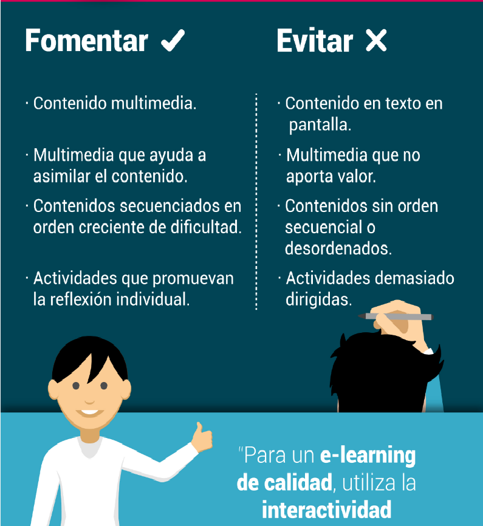
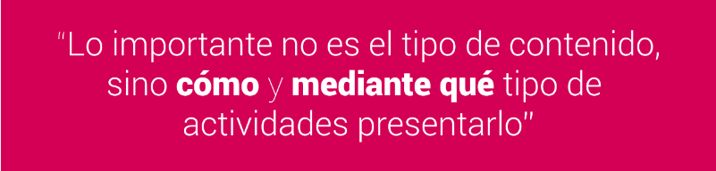

ANTECEDENTES
El e-learning autodirigido requiere de material diseñado (contenido con gráficos, animaciones y pruebas) para que los alumnos puedan avanzar de forma independiente, así como tener la posibilidad de socializar y debatir en línea. Por lo que la elaboración y preparación de contenidos interactivos en e-learning debe contener apoyo pedagógico adecuado. Su desarrollo puede variar dependiendo de la complejidad del tema, así como de la cantidad y calidad del material.
Cómo se ha comentado en la Fase de Diseño, Los materiales para un tema pueden ser recursos simples de aprendizaje (Fotografías, Imágenes, Gráficos, Cuadros, otros materiales ilustrativos) o material de apoyo para el trabajo (Manuales, Folletos, Estudios de Caso, Guías, Material de Referencia como Glosarios, etc.)
Todos estos materiales deben adaptarse al ambiente de aprendizaje virtual de forma que es importante incluir explicaciones y ejemplos que en su caso normalmente se proporcionan en la clase presencial.
PUNTOS IMPORTANTES A CONSIDERAR:

Además, para la preparación se debe tomar en cuenta:
En relación a Información para el contenido
- Ofrecer todos los conocimientos necesarios para cumplir con los objetivos de aprendizaje. Incluir información aún que parezca obvia para usted.
- Usar ejemplos familiares para que los estudiantes puedan entender y recordar conceptos.
- Establezca información esencial que los alumnos deben entender y otra que podría serle útil para complementar el tema o estimular al estudiante. Trate de evitar información innecesaria.
En relación al estilo de lenguaje para el contenido
- Escriba de manera simple y clara.
- Evitar jerga, coloquialismos y ejemplos específicos de alguna cultura.
- Reduzca al mínimo el uso de oraciones compuestas.
- Use listas de viñetas cuando corresponda.
- Explique los acrónimos cuando aparezcan por primera vez.
En este sentido, para proporcionar el conocimiento requerido en un curso de e-learning debe: (1) Proveer Documentos y Materiales; y/o (2) Escribir directamente el contenido para una lección.

Recurso que los alumnos solo pueden leer, observar o escuchar el contenido sin realizar otra acción.
Recurso que ofrece respuesta a preguntas específicas.